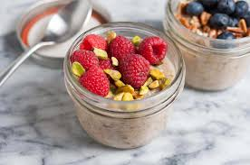
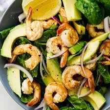
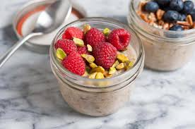
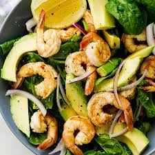

My Favourite
Assalamualaikum and hello everyone, I am Nor Ayuni Aimie and you can call me Ayuni . I Am from Kuala Terengganu and I am studying at UiTM Machang in Information Management. I am a family person and i really love My Family, My pet and My Friends . I have a pet cat named Apin. I love watching dramas or movie on Netflix but the most thing I enjoy is baking.I really enjoy baking and it can release my tension and stress. When I was twelve, my sister taught me the basics of baking since she was studying in Diploma in Culinary. She taught me every single thing from the necessity of correctly measuring materials to the best way for balancing cakes and how to make the ideal cakes. For our family gatherings, my sister and I normally prepare cakes and muffins.
MOVIES & DRAMAS
FOOD
 


